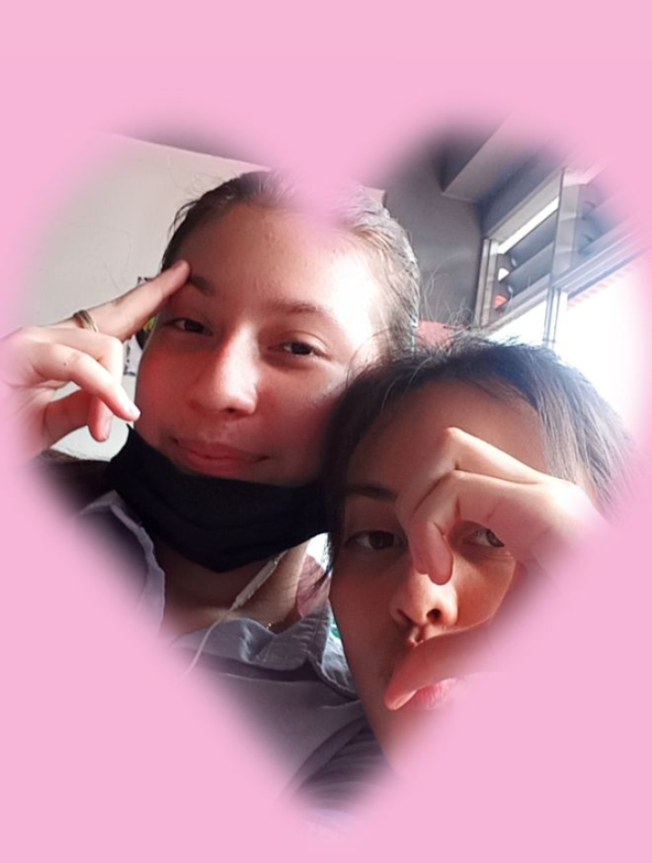
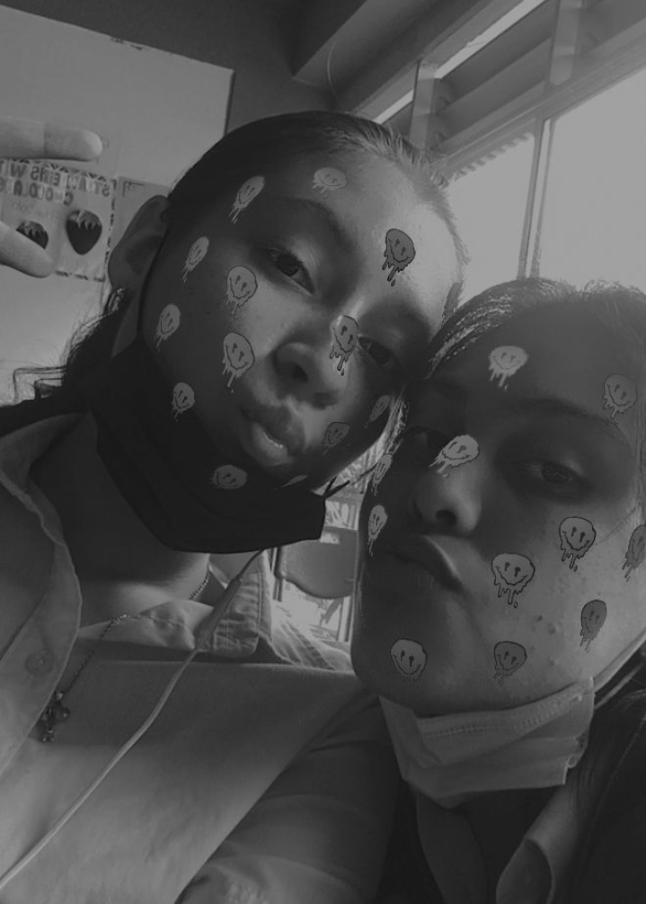
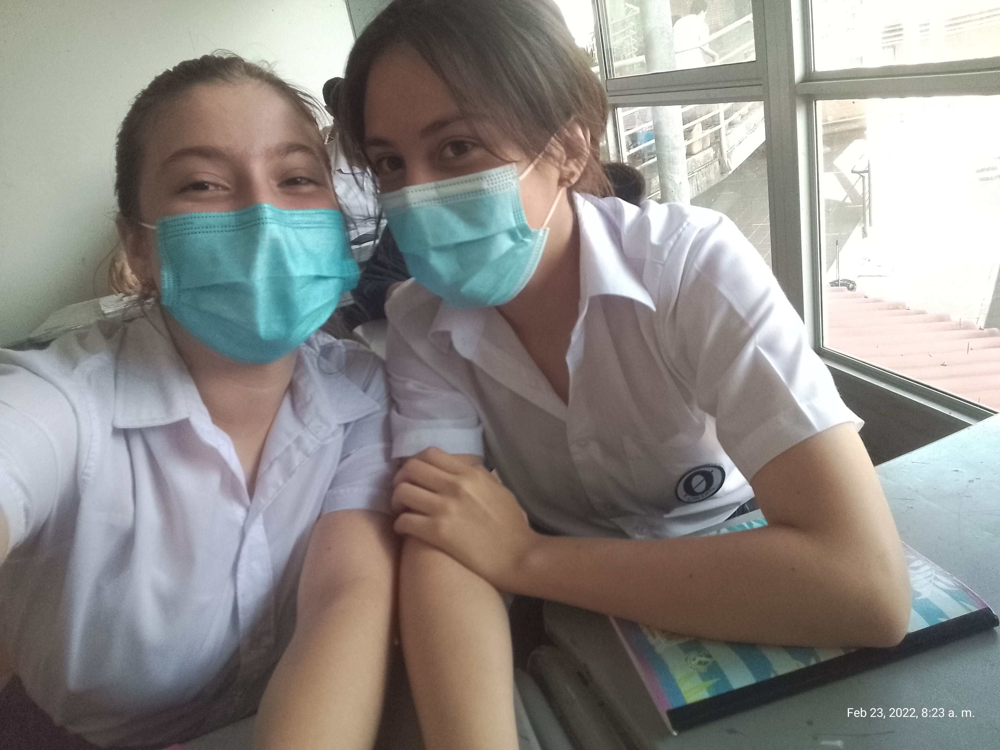
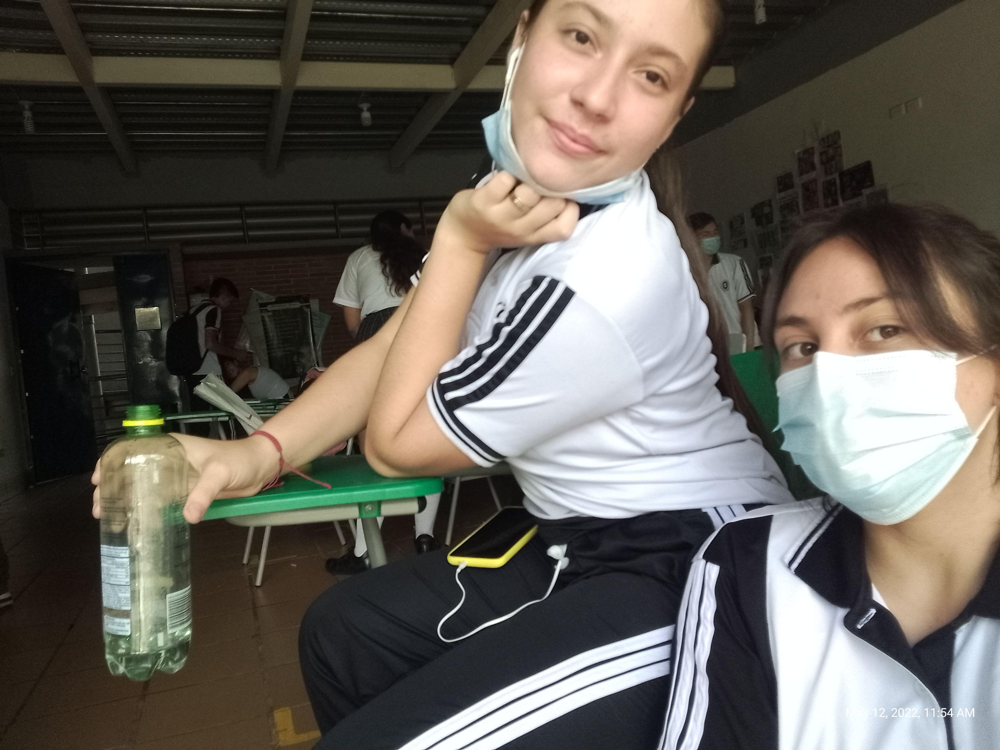
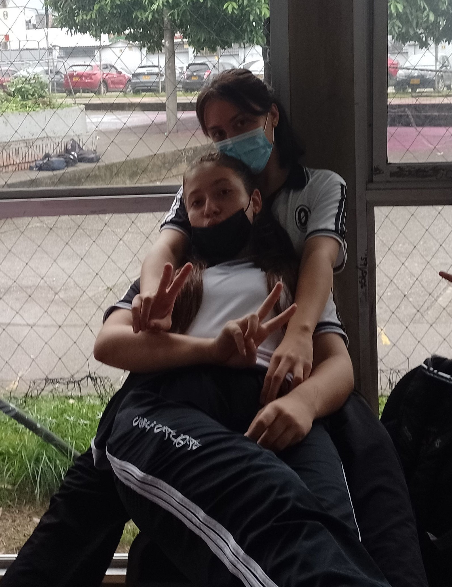
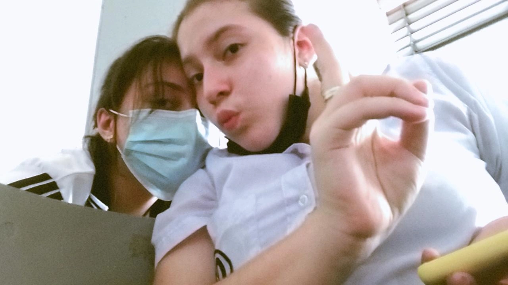
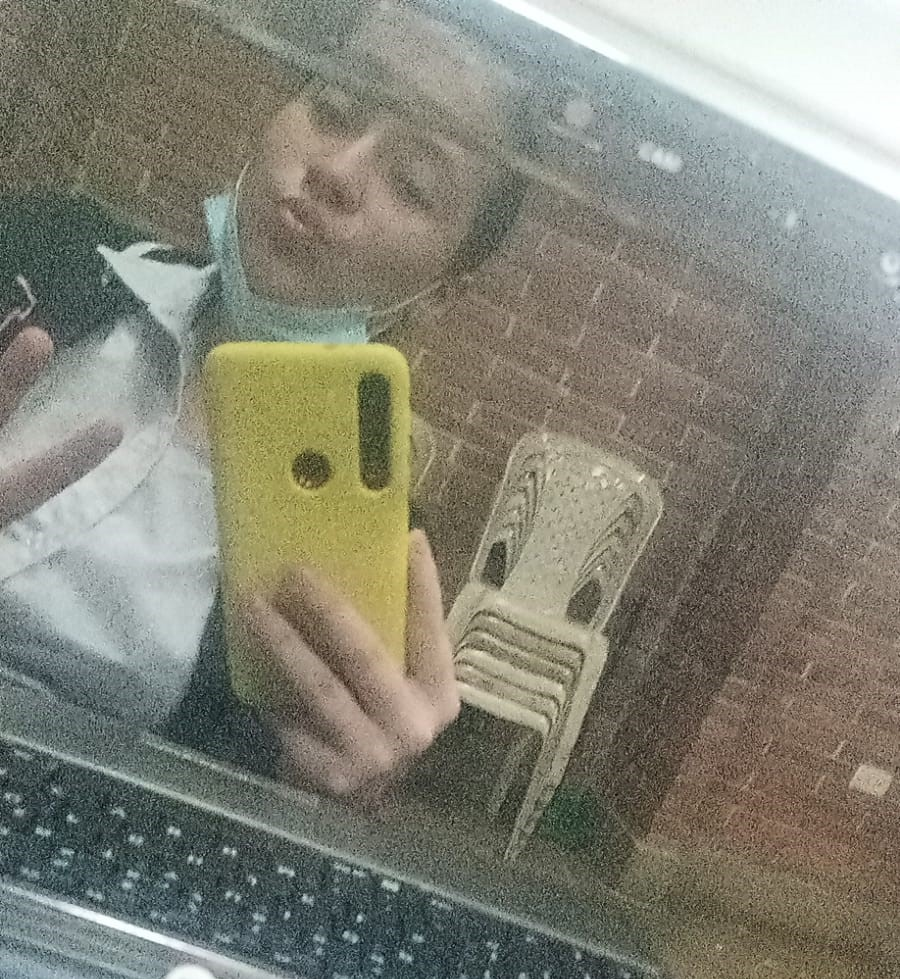
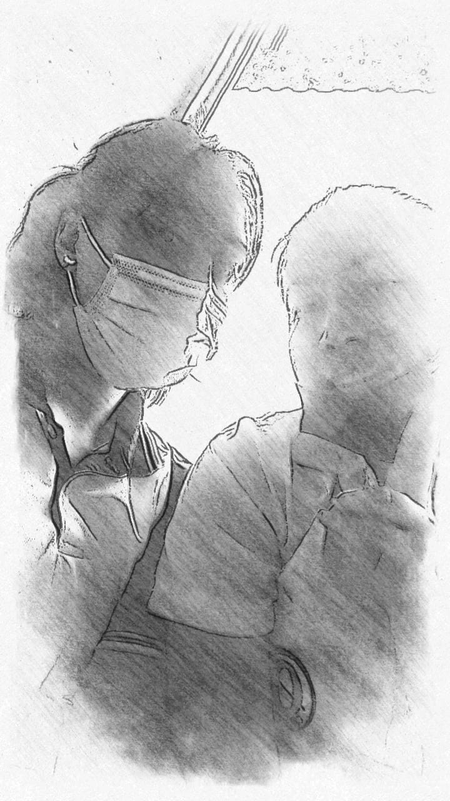
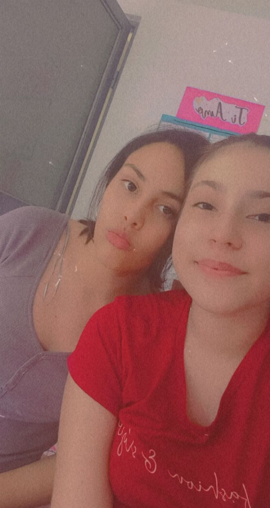
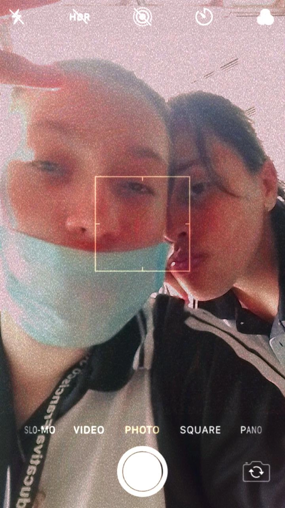

Las etapas del colegio fueron más risas que estudios. Esta foto siempre me recuerda lo mucho que molestábamos en las clases de informática, donde irónicamente nunca tocábamos una computadora. Más bien, hacíamos ejercicios y guías a mano de la manera más desastrosa, pero siempre con nuestras bromas para hacer la clase más llevadera. Ese día era miércoles de ceniza, y como siempre, me hacía la cruz, pero al rato la calor y el sudor me dejaban la cara toda manchada pareciendo un mapache. Pero lo cierto es que casi todas nuestras fotos eran en informática. Esa clase más bien era para ser modelos, porque siempre estábamos sacándonos fotos. Incluso con Juan José y Ángel hay una foto. No recuerdo exactamente dónde, pero sé que la hay. Los momentos en los que solo éramos nosotras dos, con nuestro humor único, fueron los mejores. Nos miraban y decían “estas locas que”, y yo atesoro demasiado esos recuerdos, porque son momentos que te marcan para toda la vida, sobre todo con la amiga con la que he compartido tanto.

¿Sabes? La época del regreso después de la pandemia tuvo sus altos y bajos. Hubo peleas tan bobas que ahora pienso: “¿En serio peleábamos por eso?” Jajajajaja. Pero, al final del día, siempre terminábamos gravitando una hacia la otra. Aunque estuviéramos bravas, siempre estábamos ahí la una para la otra, y eso es lo que importa. Hubiera sido infinitamente mejor que no nos hubieramos separado el tiempo que lo hicismos, pero bueno, así es la vida y así es la amistad. No todo es color de rosa, pero al final del día, lo que queda es que siempre estamos ahí la una para la otra. Mis mejores momentos de toda la vida han sido contigo, y espero que sigan siendo muchos más. Te amoo. Aunque suene cursi, no hay palabras para explicar el cariño tan grande que te tengo y lo mucho que te quiero en mi vida. Contigo me siento completa, eres mi lugar seguro, ese sitio donde sé que siempre voy a pertenecer y espero que así sea siempre.

Pijamadas, lo que mas amo en este mundo, y todo gracias a ti, por las buenas experciencias y los increibles momentos que pasabamso juntas cada semana,eran tan esporadicas pero siempre terminaban siendo las mejores, y siempre viviendolas de la mejor manera, comiendo galgerias, o la comida de tu papi, que uff que comida tan deliciosa, pero siempre la pasabamos super, no habia dia queno, siempre me la pasaba en tu casa, y creo que es de las mejores cosas que odiamos hacer, irnos a acostar a tu cama a no hacer nada pero juntas, era gloria o cuando saliamos con nuestros desfiles o consursos de cultura general, epico no habia dia que nos aburrieramos, siempre viviamos con toda esas pijamadas, lo mejor que pudimos haber vivido JUNTAS💕, a partir de eso, creo que mi momentos favoritos, mis planes favoritos son las pijamadas y todo gracias a ti, porque las mejores experiencias con contigo y siempre lo seran.
Yo creo que el día que me enteré de que ya no estabas en Villao fue un día muy extraño, porque no me hacía a la idea de que mi mejor amiga, la persona con la que siempre había compartido mi vida, ya no estaba a un paso de distancia, sino a kilómetros, a un continente entero de mí. Me acuerdo que ese día Isa te preguntó si volvías, y tú dijiste que no. En ese momento no asimilé las cosas, pero cuando llegó la noche y me puse a pensar, caí bruscamente en la realidad de que ya no te iba a ver más. Recuerdo que te escribí, y cuando me lo confirmaste, ese día lloré como nunca, porque sentí que acababa de perderlo todo: a mi amistad del alma, a mi favorite crazy. No tuvimos ni un cierre, ni siquiera una despedida… todo fue como dejar un ciclo a medias. Y aunque estábamos bien, ya no era como antes. Enterarme de que once no lo íbamos a pasar juntas, como lo soñamos desde sexto, fue un golpe durísimo. Ese año simplemente no fue igual, porque yo no estaba preparada para vivirlo sin ti. Fue algo que nunca esperé, pero que me tocó afrontar. Por eso, déjame decirte que “feliz” es poco para describir lo afortunada que me siento de seguir en contacto contigo y de saber de tu vida. Porque aunque no lo creas, eres una parte fundamental de la mía. Y que todavía estés ahí, manteniendo contacto conmigo, es algo que agradezco con el corazón, porque me tranquiliza saber que no he perdido a alguien tan importante como lo eres tú, mi Mejora.
Nuestro pasatiempo favorito en los descansos era que tú jugaras en mi teléfono al juego de colorear con pixeles y números, mientras yo cogía el tuyo para tomarnos fotos en Snapchat o grabar videos de todo, creyéndome la influencer. Siempre nos dividíamos así, y éramos felices. También recuerdo cuando descargué el juego de la cocinita y te volviste experta en preparar tanto pasta como hamburguesas. Lo mejor era que cada una tenía la huella registrada en el teléfono de la otra, así que entrar era lo más fácil del mundo. Esa confianza que teníamos no creo, ni quiero, volver a encontrarla con alguien más; la gente de hoy en día nada que ver. Me acuerdo también de la época en la que amábamos a CNCO e intentábamos grabar reacciones a sus canciones, pero siempre fracasábamos en el intento. Nunca fue lo nuestro, pero igual éramos felices viviendo nuestras locuras.
La comida siempre fue nuestro lugar seguro. Nos la pasábamos comiendo a cada hora, era nuestra actividad favorita. Si no era con la lonchera que te enviaban, era con lo que yo compraba, pero siempre juntas, siempre comiendo. Nada mejor que eso. Hasta en clase lo hacíamos a escondidas para que no nos regañaran, porque claro, siempre molestaban por eso. Creo que si no comíamos al menos cuatro veces en la mañana, era poco. Esa era nuestra felicidad: las pequeñas cosas. Algo que siempre se lleva en el corazón, porque hasta en la mínima acción siempre estábamos nosotras dos, solo nosotras. Por eso la mayoría de recuerdos que tengo son a tu lado, porque éramos inseparables. Lo único de lo que me arrepiento es de no haber arreglado bien las cosas cuando todavía teníamos la oportunidad de hacerlo en persona. De resto, solo me queda sentirme súper afortunada y agradecida de haber contado con alguien tan única y especial como tú.
Ahorita, donde nuestras vidas tomaron rumbos que no esperábamos, me hace muy feliz saber que seguimos en contacto. Me pongo a pensar en todo lo que siempre hablábamos que queríamos hacer, y sí, nos faltaron muchas cosas por vivir juntas, pero confío en que con la ayuda de Dios podremos volver a vernos y seguir compartiendo, para vivir todo lo que aún nos queda pendiente. Hoy en día a veces me pregunto qué hubiera pasado si no hubieras viajado, pero siento que todo ocurrió por una razón: para que pudieras tener las oportunidades que ahora tienes, tanto en tu salud como en lo académico. No sabes lo feliz que me hace verte cada vez más cerca de estudiar lo que sueñas, y cómo aprendes a ver el mundo desde tu propia experiencia con la discapacidad de tus ojos. Más feliz aún me hace que me hagas parte de tu vida, contándome tus historias y compartiéndome tu día a día. Yo, la más feliz de que lo hagas, porque aunque la distancia no nos permita vernos por ahora, siempre nos mantenemos cerca y nunca perdemos el contacto.
Hemos vivido tantas cosas juntas que ya te acostumbraste a mi personalidad, a aguantarme tanto tiempo. Sabes, la gente que conozco ahora me dice que soy muy de dar cariño, que me gusta que me abracen; me llaman consentida. Y yo digo: “pues para mí es normal”, porque contigo siempre, por las mañanas, era abrazo y beso. La gente no está acostumbrada a eso. Con la mayoría de mis amigos choco mucho por ese motivo, y yo pienso: “es que nunca tuvieron alguien especial e importante en sus vidas”. Suena cruel, pero es que para mí ser cariñosa es normal, porque toda mi vida fue así contigo. Acoplarme a esa gente es muy duro; conocer personas nuevas en general es difícil, porque uno espera que siempre sea igual… y ahí está la realidad: no hay nadie como nadie. Cada quien tiene su forma de ser. Y que yo quiera ver en otra gente, aunque sea el mínimo rastro del tipo de amistad que tuve contigo, es demasiado complicado. Espero mucho de la gente, cuando la verdad es que tristemente no voy a encontrar ese tipo de amistad al que estoy acostumbrada, porque siempre serás tú la referencia de todo lo que busco en una amistad. Contigo viví todo lo bueno, disfruté de verdad. Ahora solo se trata de sobrevivir entre gente que no sabes si te aprecia o está contigo por conveniencia. Por eso no me cansaré de decirlo: sin ti, sin esos audios que parecen podcast, sin tus mensajes, sería mucho más duro vivir esta etapa. Porque al menos contigo sé que tengo la amistad que siempre ha estado para mí, y la que siempre quiero tener.
Puede que en estos momentos hayamos tomado caminos diferentes a los que pensábamos hace 5 o 6 años, pero al final son los caminos que se nos dieron. Puede que no sean los mejores, pero quizás son los indicados para nosotras y los que nos llevarán a nuestro destino. Lo más importante es que mantenemos el contacto, y eso es lo que realmente importa: que a pesar de la distancia y del tiempo seguimos siendo las mismas locas de siempre, las que se cuentan todo, se apoyan en todo y están incondicionalmente. Eso es lo que vale: que a pesar de todo seguimos siendo las mismas pero siempre JUNTAS 💕. Puede que estemos separadas en la distancia y no podamos vernos en persona, pero en el alma, en el cariño y en estar pendientes s eguimos igual, manteniendo contacto e informándonos de todo. Y adoro eso, porque sé que tengo a mi mejor amiga, mi confidente, mi todo. Eso es lo que más amo. Siempre tu y yo, y espero que asi sea siempre, porque eres mi persona y sin mis mejores momentos contigo, sin mis locuras contigo, sin mis pijamadas contigo, sin mis risas contigo.
La distancia puede ser un impedimento cuando las cosas no salen como uno quiere, pero para nosotras no ha sido un gran problema. Siempre hemos estado en contacto, pendientes de lo que pasa en la vida de la otra. Han habido muchos cambios, muchas cosas nuevas, pero a pesar de todo, seguimos siendo las mismas locas de siempre: las que se cuentan todo, se apoyan en todo y están incondicionalmente. Eso es lo que realmente vale. Que, pase lo que pase, seguimos siendo las mismas mejores amigas.
Desde tercero de primaria nos conocemos. Nuestra amistad se fue formando con el tiempo, y sin duda, ha sido de lo mejor que me ha pasado en esta vida. Sin saberlo, eso nos llevaría a casi 10 años juntas. Me acuerdo cuando llegué, con la típica sensación de ser "la nueva", pero a pesar de todos los impedimentos y obstáculos que nos puso la vida, seguimos juntas. Todas las historias que hemos vivido son inolvidables, porque siempre las compartimos con una sonrisa y una al lado de la otra. Y espero, de corazón, que sigamos creando más momentos así.
Otra de mis memorias favoritas son nuestras pijamadas. Siempre eran lo mejor de la semana: ver películas, comer, contar historias y reírnos hasta que nos dolía el estómago. Eran momentos solo para nosotras, sin preocupaciones, donde la amistad brillaba. A pesar del tiempo, seguimos con la misma confianza y complicidad, algo que valoro profundamente porque no es fácil encontrar a alguien con quien puedas ser tú misma sin miedo a ser juzgada. Contigo, siempre he podido ser yo.
Otro de los recuerdos que tengo es cuando hacíamos modelaje en tu casa, con la ropa y los tacones de tu mami. Siempre nos creíamos las modelos, armando la mera recocha. Nos montábamos nuestro propio mundo, con un desfile inigualable. Y lo mejor es que nunca nos aburríamos, a pesar de pasar 24/7 en tu casa. Siempre había algo que hacer, y siempre la pasábamos súper. No había día en el que no nos riéramos, así fuera por una mera bobada. Pero es que así somos nosotras, nos reímos por cualquier cosa, y eso es algo que siempre ha estado y siempre estará. Eso es lo que más amo de nosotras: que todo lo convertimos en un buen momento, y que juntas siempre nos reímos de todo y la pasamos increíble.
Otra anécdota que recuerdo es cuando cocinábamos en tu casa, la famosa pasta. Siempre nos pasaba algo, y creo que fue en esos momentos cuando nos dimos cuenta de que somos un desastre en la cocina. Si no estábamos distrayéndonos viendo videos de La Divaza, estábamos echando chisme, pero nunca prestábamos atención a la olla que estaba cocinándose. Sin embargo, al final, siempre logramos sacar adelante ese almuerzo, ¿cómo? Ni idea, pero lo hacíamos. Y lo mejor de todo es que siempre terminábamos comiendo súper bien. Y después, la mayoría de las veces, terminábamos en pijama, y lo pasábamos aún mejor.
Todas las locuras e historias que hemos vivido se quedan grabadas en la mente y en el corazón. No sé si te acuerdas de cuando tú querías bailar en la semana cultural y yo te decía que no, pero al final terminamos bailando juntas la canción de HEY DJ de CNCO. Fue tan chistoso porque estábamos súper nerviosas, y siempre practicábamos en tu casa, en los descansos, para hacerlo lo mejor posible. Casi no salía la presentación, pero tus contactos nos salvaron de hacer el oso. Ese recuerdo lo tengo súper presente. Me acuerdo lo nerviosa que estaba, sobre todo porque en ese entonces estaba Camilo, y yo más nerviosa aún. No sé cómo lo sacamos adelante, pero son esas épocas que marcan, y todo eso fue contigo a mi lado.
Todas las aventuras que hemos vivido a lo largo de los años me hacen desear, de todo corazón, poder repetirlas contigo ya de grandes. Quiero cumplir todo lo que soñamos y planeamos, lo que quedó pendiente cuando llegó la pandemia y tuviste que irte. Ojalá, si Dios quiere, podamos estudiar algo juntas, que yo haga un intercambio en la Universidad de Chicago donde estés y vivir todo lo que imaginamos. Quiero seguir creando recuerdos contigo, porque siempre serás mi persona, mi mejor amiga, mi confidente y mi todo. Mi meta es reencontrarnos, verte, abrazarte y no soltarte nunca más, porque rendirse no es una opción.
Gracias por ser mi compañera de locuras y mi todo. Te adoroooo con todo mi corazón y siempre estaré aquí para ti, sin importar la distancia o el tiempo que pase. Eres una parte fundamental de mi vida, y siempre lo serás, que eso nunca te quede duda, porque eres mi persona y siempre lo serás. Te quiero demasiadoooo 💕.
Todo esto para que te quede de recuerdo todo lo que hemos vivido, pa' que te tengas un pedazo de nosotras siempre que quieras verlo y todo.
Pa' conmemorar que has cumplido 19 años y por los que vamos, y más por estar 11 años juntas, y que sigan siendo muchos más.
Nadie como tú y ni que la necesite porque contigo me basta y me sobra,
FELIZZZZZZZ CUMPLEAÑOSSSSSSSSSSS A MY PERSON FAVORITE.